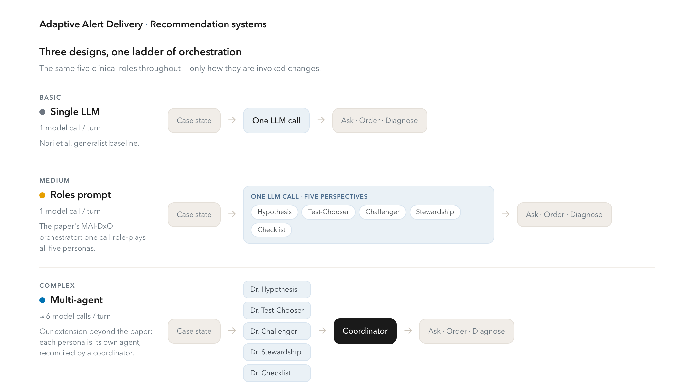
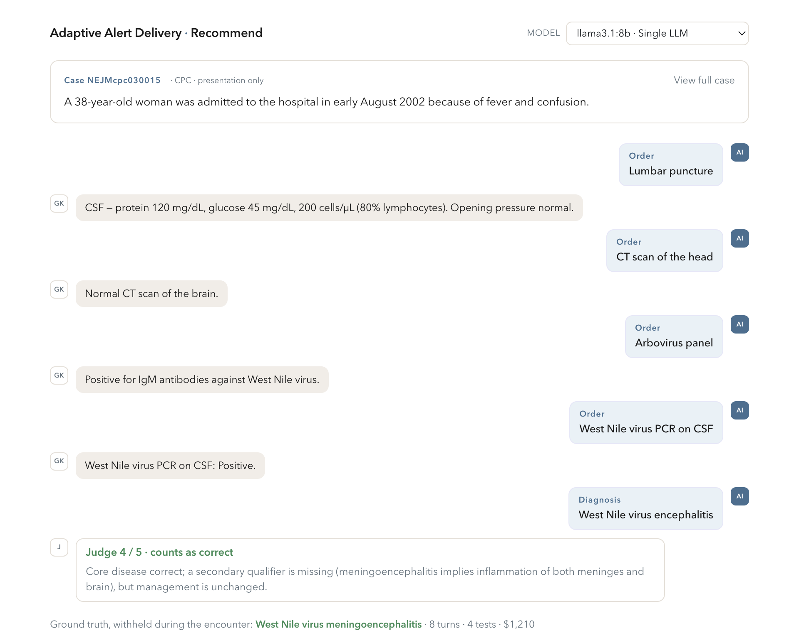
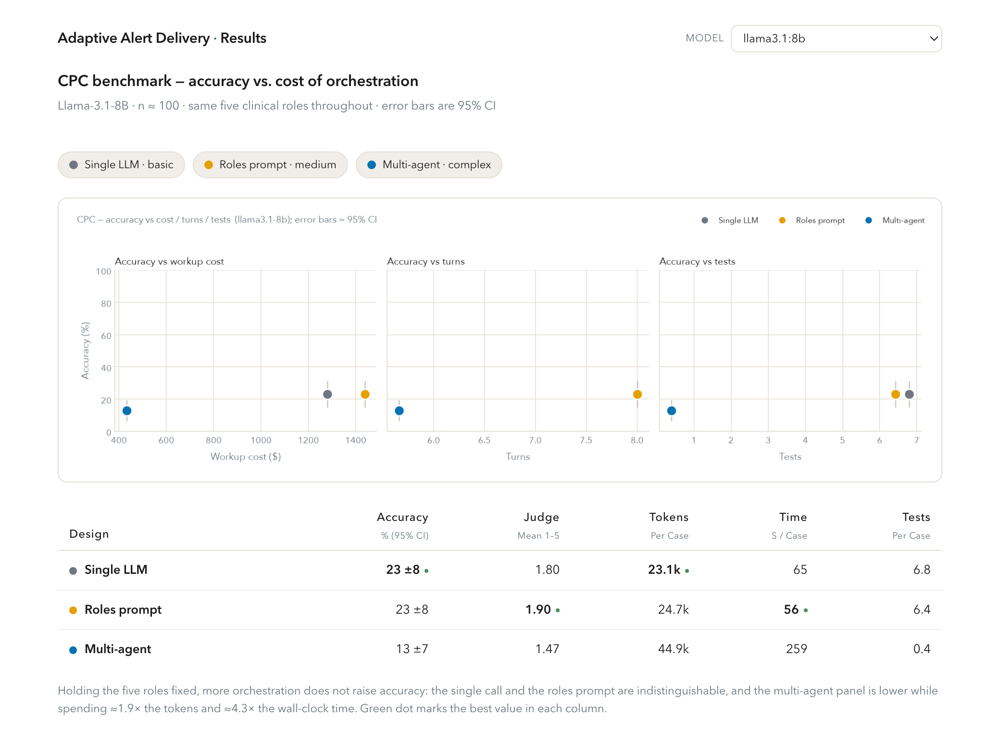
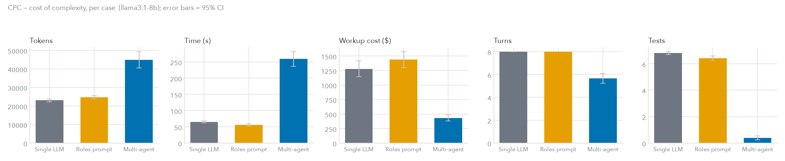

| Period | Milestone | Venue |
|---|---|---|
| Q1 · Sep '26 | Benchmark & EHR environments | NeurIPS workshop |
| Q3 · Jan '27 | Adaptive delivery policy | ICML (archival) |
| Q4 · May '27 | Full system + clinical results | NeurIPS (archival) |